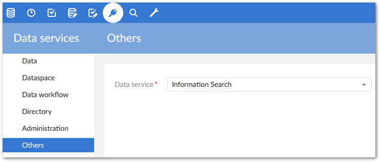
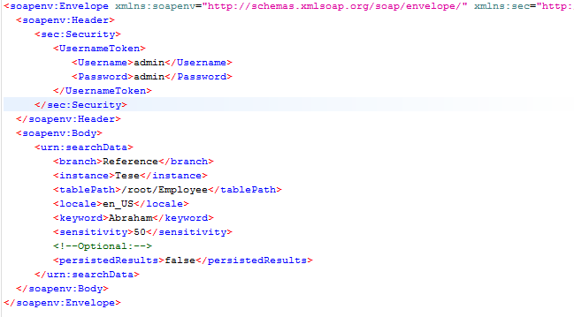
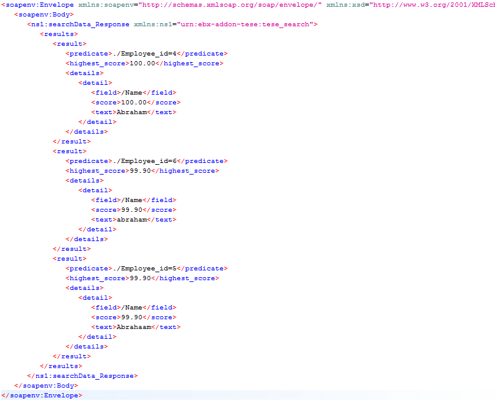

A web service can expose EBX® Information Search Add-on functionality using standard Simple Object Access Protocol (SOAP) request and response. If you input information to search into a SOAP request then you can receive the result in a SOAP response.
You can expose the fuzzy search feature via a web service. The following shows how to perform a search using a web service based on the EBX® Information Search Add-on configuration:
Go to Others service in the Data services tab choose EBX® Information Search Add-on and click Next:

Select Download WSDL.
The following is an example of the SOAP request for the downloaded WSDL:

You can use the persistedResults property to enable or disable search result storage by specifying a value of true or false, respectively.
The following is an example of the SOAP response that is returned by executing the above SOAP request:
